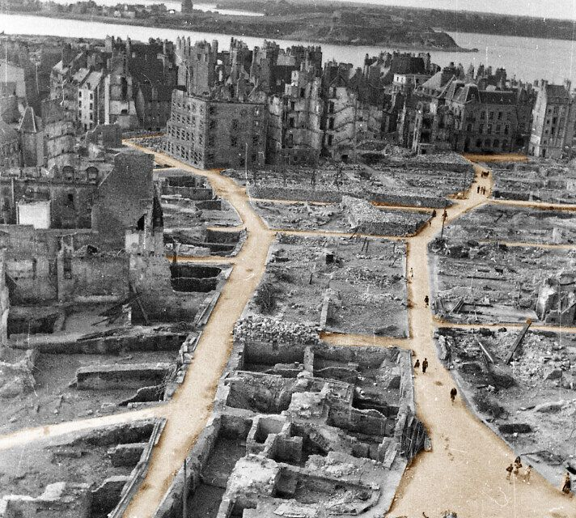
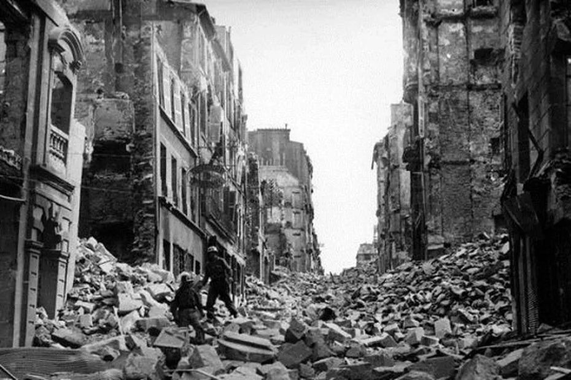
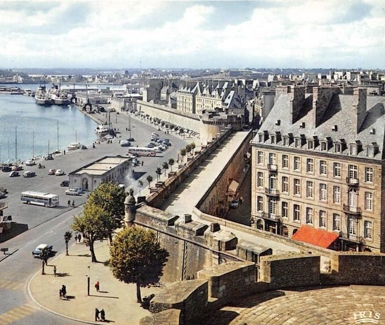

1. Comment se forme le plus-que-parfait ?
Auxiliaire, participe passé, accord : les trois clés.
📐 La formule
| avec AVOIR | avec ÊTRE | |
|---|---|---|
| je / j' | j'avais fini | j'étais parti(e) |
| tu | tu avais fini | tu étais parti(e) |
| il / elle / on | il avait fini | elle était partie |
| nous | nous avions fini | nous étions parti(e)s |
| vous | vous aviez fini | vous étiez parti(e)(s) |
| ils / elles | ils avaient fini | elles étaient parties |
💡 Astuce : même auxiliaire, même participe passé
Si vous connaissez le passé composé, vous connaissez déjà le plus-que-parfait : on garde le même auxiliaire et le même participe ; seul l'auxiliaire passe à l'imparfait.
| Passé composé | Plus-que-parfait |
|---|---|
| nous avons envoyé | nous avions envoyé |
| elle est venue | elle était venue |
| ils se sont levés | ils s'étaient levés |
| je n'ai pas compris | je n'avais pas compris |
🔁 Rappel : les participes passés
- -é : tous les verbes en -er (parler → parlé), + aller → allé, naître → né
- -i : finir → fini, choisir → choisi, partir → parti, dormir → dormi
- -u : voir → vu, lire → lu, venir → venu, pouvoir → pu, boire → bu…
- -is : prendre → pris, mettre → mis, apprendre → appris
- -it : dire → dit, écrire → écrit, faire → fait
- Irréguliers : être → été, avoir → eu, mourir → mort, ouvrir → ouvert
Exercice 1 · Écrivez le participe passé
Écrivez le participe passé de chaque verbe (attention aux accents !).
🏠 Rappel : la « maison d'être »
Avec être, le participe s'accorde avec le sujet : elles étaient arrivées.
⚠️ Attention : beaucoup de verbes de mouvement prennent avoir (marcher, courir, voyager, nager…). Et monter, descendre, sortir, passer prennent avoir quand ils ont un COD : il avait descendu la valise.
Exercice 2 · Avoir ou être ?
Choisissez l'auxiliaire de chaque verbe au plus-que-parfait.
Exercice 3 · Conjuguez au plus-que-parfait
Conjuguez le verbe entre parenthèses. Pour les verbes pronominaux, écrivez aussi le pronom (nous nous étions…).
2. Quand utiliser le plus-que-parfait ?
Le « passé du passé ».
🎬 Une histoire en deux images
Quand Lucie est arrivée ②, le film avait déjà commencé ①.
🧭 Un repère dans le passé
Le plus-que-parfait exprime une action terminée avant une autre action passée. Il a toujours besoin d'un repère dans le passé, en général un verbe au passé composé (ou à l'imparfait). À partir de ce repère, le plus-que-parfait permet de revenir en arrière.
Sans repère, pas de plus-que-parfait
- ❌ Hier, j'avais mangé une pizza. (aucun repère : on dit j'ai mangé)
- ✅ Quand tu as téléphoné, j'avais déjà mangé.
L'ordre des mots ≠ l'ordre des actions
Dans Paul n'est pas venu car il avait déjà vu le film, l'action racontée en second (voir le film) s'est passée en premier. C'est le plus-que-parfait qui montre l'ordre réel.
Des mots qui aident
- déjà, ne… pas encore : le train était déjà parti
- quand / lorsque : lorsqu'il avait fini, il est sorti
- parce que / car (explication) : elle était fatiguée car elle avait mal dormi
- que / qui (relatifs) : le livre que j'avais lu
- dire que, expliquer que (discours rapporté) : il a dit qu'il avait oublié
→ Lorsqu'il est arrivé sur le quai, le train était déjà parti.
🧩 Les trois temps du récit
| Temps | Rôle dans le récit | Exemple |
|---|---|---|
| Passé composé | actions principales, événements | Lucie est arrivée. |
| Imparfait | décor, description, habitudes | Il pleuvait. |
| Plus-que-parfait | action terminée avant une autre action passée | Le film avait commencé. |
Exercice 4 · Qu'est-ce qui s'est passé en premier ?
Lisez la phrase et choisissez l'action qui a eu lieu en premier.
Exercice 5 · Plus-que-parfait ou passé composé ?
Mettez les verbes entre parenthèses au plus-que-parfait ou au passé composé. Écrivez tout le verbe conjugué (avec la négation ou déjà si nécessaire).
3. Raconter au passé
Trois petits textes à transposer du présent au passé.
🎭 Le théâtre du récit
- Le décor, la description, l'état, l'habitude → imparfait (il faisait beau, tous les étés je passais…)
- Les événements, les actions principales → passé composé (soudain, le vent s'est levé)
- Une action antérieure à une autre action passée → plus-que-parfait (elle avait oublié son téléphone)
Mots-signaux : soudain, tout à coup, un jour → passé composé · tous les jours, d'habitude, souvent → imparfait.
Texte 1 · Un dimanche à Saint-Malo
Passé composé et imparfait. Lisez le texte au présent, puis écrivez les verbes au passé.
Texte 2 · Un lundi difficile défi PQP
Passé composé, imparfait… et deux plus-que-parfaits cachés !
Texte 3 · Les étés chez ma grand-mère
Habitudes à l'imparfait, événements au passé composé.
4. Compréhension orale
Émission « Les pierres racontent » : la reconstruction de Saint-Malo et de Brest après 1944.
🏰 Avant d'écouter : qu'est-ce qu'une ville « intra-muros » ?
Été 1944 : deux villes détruites


Quelques mots utiles
- les remparts : les grands murs qui entourent une ville ancienne
- intra-muros : à l'intérieur des remparts
- un siège : encercler une ville pour la prendre
- se rendre : arrêter de combattre, capituler
- une baraque : une petite maison provisoire, souvent en bois
- le granit : une pierre très dure, typique de la Bretagne
- le béton : un matériau de construction moderne, gris
- aplanir : rendre plat
🎧 Écoutez l'émission (3 min 19)
Impossible de charger l'enregistrement. Vérifiez votre connexion et rechargez la page.
Conseil : écoutez une première fois sans lire les questions, puis une deuxième et une troisième fois pour répondre.
Exercice 6 · Questionnaire (15 questions)
Choisissez la bonne réponse, puis cliquez sur « Vérifier ».
📄 Transcription
🔒 La transcription sera disponible quand vous aurez vérifié le questionnaire.
Claire : Bonjour à toutes et à tous, et bienvenue dans « Les pierres racontent », l'émission qui raconte l'histoire des villes à travers leurs bâtiments. Aujourd'hui, nous partons en Bretagne avec l'historien Yann Le Goff. Bonjour Yann !
Yann : Bonjour Claire.
Claire : Yann, en 1944, au moment de la Libération, deux villes bretonnes ont beaucoup souffert : Saint-Malo et Brest. Qu'est-ce qui s'est passé ?
Yann : Commençons par Saint-Malo. Au mois d'août 1944, les soldats américains sont arrivés devant la ville. Les Allemands l'occupaient et ils refusaient de se rendre. Pendant deux semaines, il y a eu des combats et des bombardements, et un énorme incendie a brûlé la vieille ville. Quand les combats se sont terminés, près de 80 % de la ville intra-muros avait disparu.
Claire : Intra-muros, c'est-à-dire la ville à l'intérieur des remparts ?
Yann : Exactement. Et le plus étonnant, c'est que les remparts, eux, avaient résisté. Beaucoup d'habitants, qui avaient quitté la ville avant les combats, sont revenus quelques semaines plus tard. Ils n'ont pas reconnu leur quartier : leurs maisons avaient brûlé et les rues étaient pleines de pierres.
Claire : Et à Brest ?
Yann : À Brest, c'était encore pire. Le port était une base très importante pour les sous-marins allemands, alors la ville avait déjà subi de nombreux bombardements pendant toute la guerre. En septembre 1944, après un long siège, Brest était presque entièrement détruite.
Claire : Alors, comment a-t-on reconstruit ces deux villes ?
Yann : C'est là que l'histoire devient intéressante : on a fait deux choix très différents. À Saint-Malo, l'architecte Louis Arretche a voulu garder l'esprit de l'ancienne ville. On a réutilisé une partie des vieilles pierres de granit, on a gardé les toits très pentus et les hautes cheminées. Mais attention, ce n'est pas une copie exacte ! À l'intérieur, les appartements étaient modernes, plus clairs, avec l'eau courante, et certaines rues étaient plus larges qu'avant.
Claire : Donc, quand on se promène aujourd'hui dans Saint-Malo, on a l'impression de visiter une ville très ancienne…
Yann : Oui ! Et beaucoup de touristes ne savent pas que la plupart des maisons ont été construites après la guerre.
Claire : Et à Brest, on a fait la même chose ?
Yann : Pas du tout. À Brest, l'architecte Jean-Baptiste Mathon a préféré une ville moderne : de grandes avenues droites, des immeubles en béton, presque tous de la même hauteur. On a même utilisé les ruines pour aplanir le terrain.
Claire : Et pendant les travaux, où vivaient les Brestois ?
Yann : Dans des baraques en bois. Normalement, c'était une solution provisoire… mais le provisoire a duré longtemps : certaines familles y ont vécu pendant de longues années.
Claire : Et les Brestois, est-ce qu'ils ont aimé leur nouvelle ville ?
Yann : Au début, beaucoup la trouvaient froide et grise. Ils regrettaient la ville qu'ils avaient connue avant la guerre. Mais aujourd'hui, on regarde ce patrimoine autrement : les architectes et les historiens s'intéressent de plus en plus à l'architecture de la Reconstruction.
Claire : Pour finir, Yann, quelle reconstruction préférez-vous ?
Yann : Je ne vais pas choisir ! Ces deux villes racontent la même histoire, mais de deux façons différentes : Saint-Malo a voulu retrouver son passé, Brest a voulu regarder vers l'avenir.
Claire : Merci beaucoup, Yann. Et vous, chers auditeurs, quelle ville aimeriez-vous visiter ? Rendez-vous la semaine prochaine dans « Les pierres racontent ».
🏗️ Après l'écoute : deux reconstructions
🔒 Disponible quand vous aurez vérifié le questionnaire.

À l'oral, en petits groupes
- Comparez les deux photos : quelles différences voyez-vous ?
- Racontez avec le plus-que-parfait : qu'est-ce qui s'était passé dans ces villes avant la reconstruction ? (Quand les habitants sont revenus, …)
- Quelle reconstruction préférez-vous ? Pourquoi ?
- Dans votre pays, connaissez-vous une ville ou un quartier qui a été reconstruit ? Qu'est-ce qui s'était passé ?
📊 Bilan
| Partie | Score |
|---|
5. À l'oral !
Fiches recto-verso et micro-dialogues, en binôme.
🃏 20 fiches recto-verso
Lisez la phrase au recto et complétez-la à voix haute avec le plus-que-parfait, à l'aide des indices. Touchez la fiche pour voir la réponse au verso. En binôme : l'un complète, l'autre vérifie, puis on échange les rôles.
💬 10 micro-dialogues
En binôme. A lit ses répliques ; B répond à l'oral à partir des indices, avec le passé composé et le plus-que-parfait. Comparez avec le modèle, puis changez de rôle. Défi : ajoutez deux répliques de votre invention.